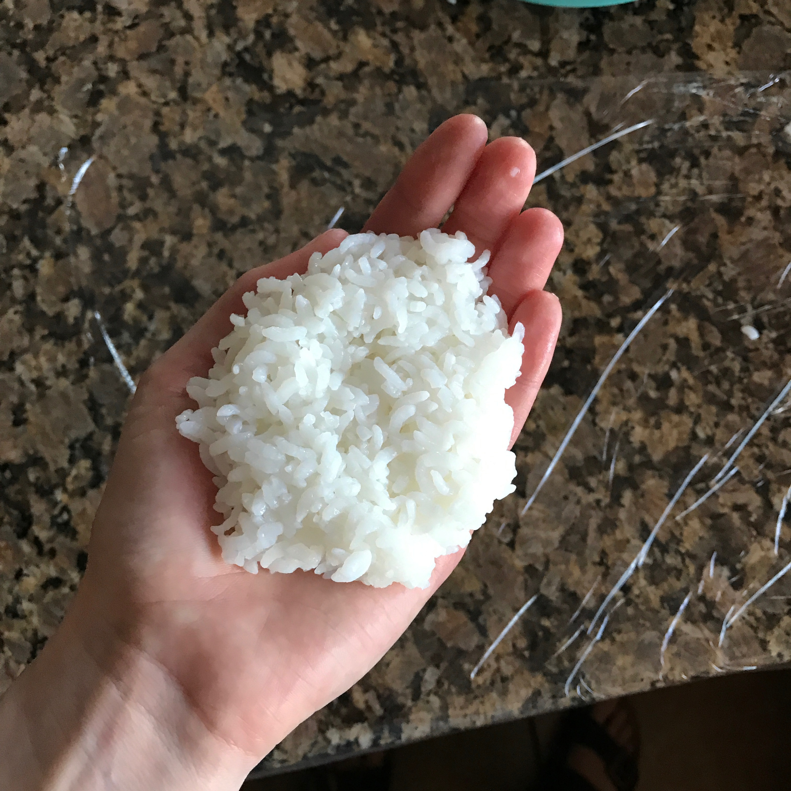
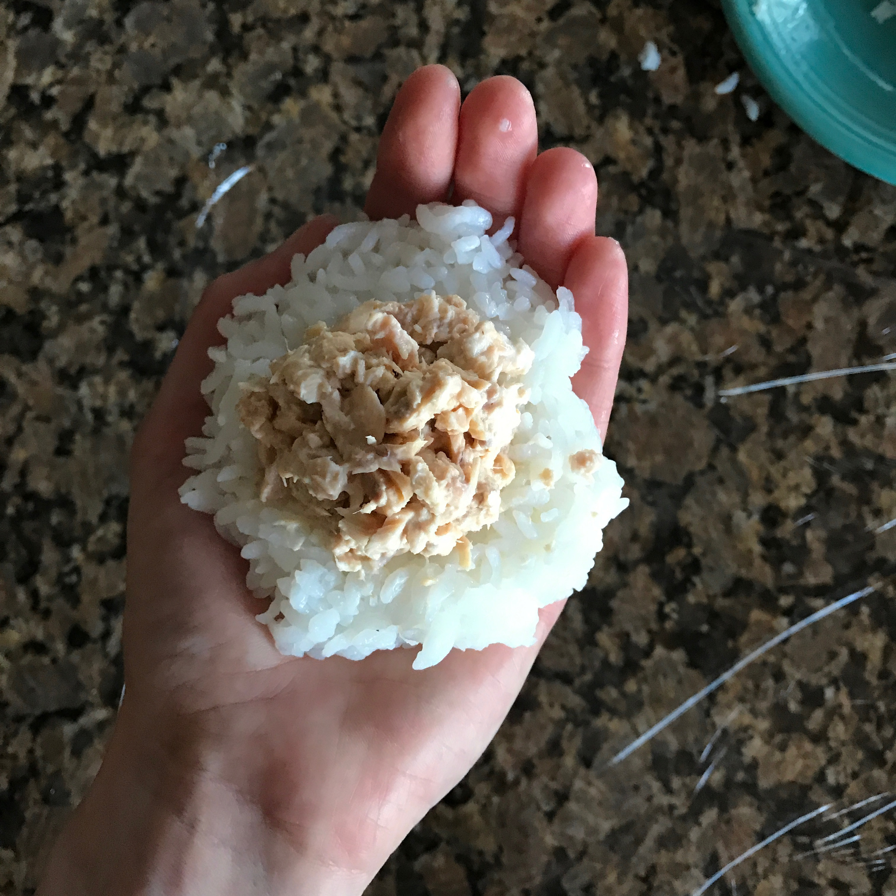
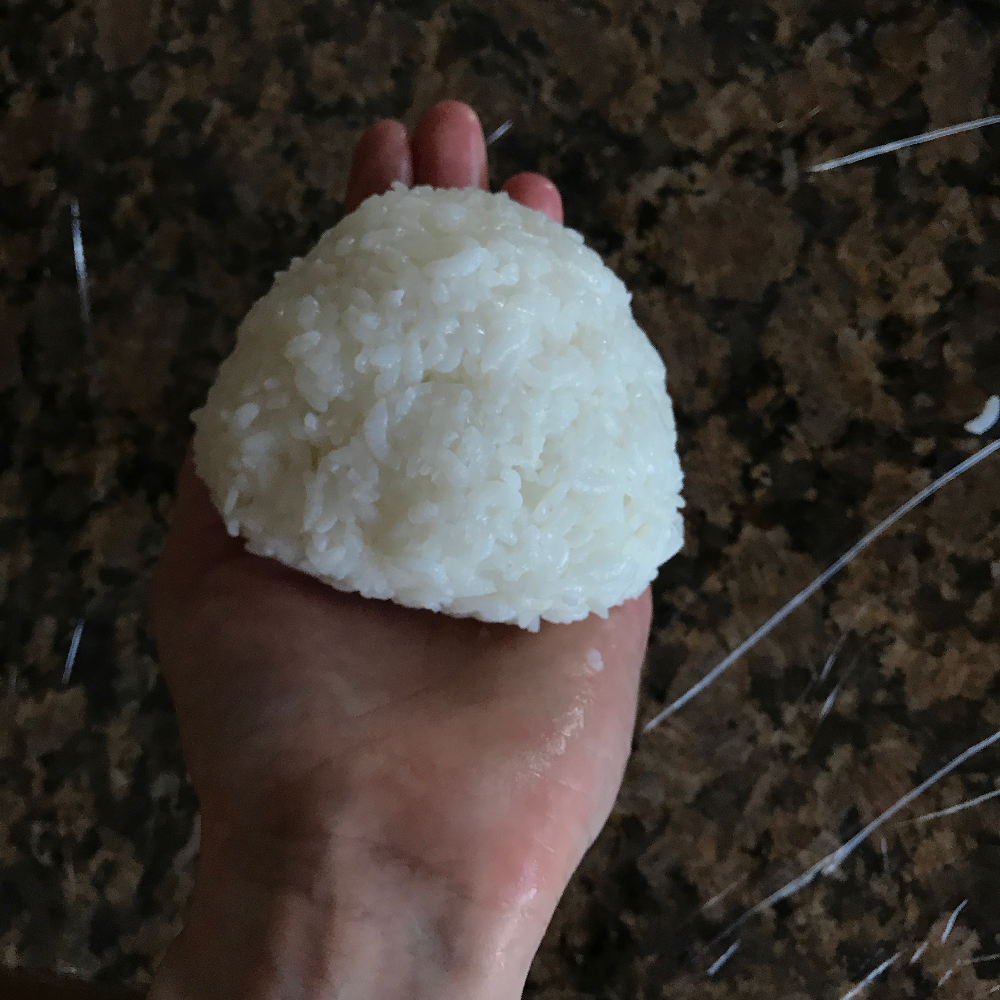
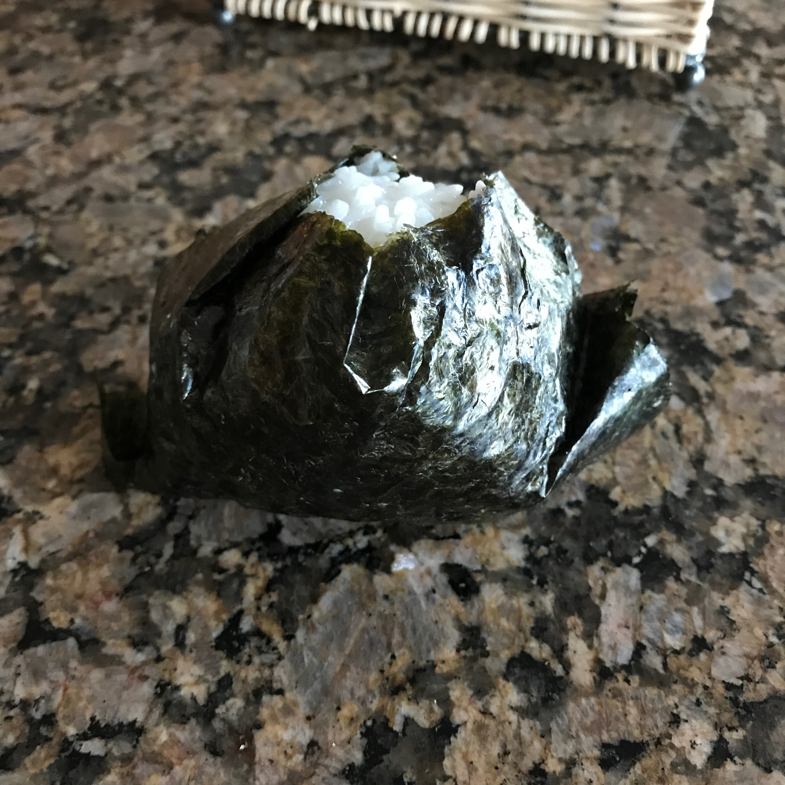

- Rice! (Any rice you prefer will do)
- Salmon (Or any filling you would like, but fish is more common)
- Salt
- Mayonaise (preferably Japanese mayoniase if available)
- Nori (seaweed wraps)
Let's cook! >.<
First things first! We will cook the rice first! While it is cooking we can work on the filling.
-
Cook your rice!
Depending on your rice, times will vary. I chose instant rice, so I could either microwave it, or boil it for 10 minutes. I am going to boil it for 10 minutes. -
Make your filling!
Drain your canned salmon gently, and mix in mayonaise (about 2 tablespoons) into a small bowl. Add some salt here if you prefer, but it's not necessary. Start your rice ball!
After your rice is done and cool enough to handle, gather a good ammount of rice; about the size of a baseball (don't worry! Just eyeball it!) Either mold with your hands by dipping them
in saltwater, or use Saran Wrap. Add your filling!
Now! Make an indent in each of your molded rice shapes. These indents will hold your filling. Try to make room for 1 to 2 tablespoons worth of filling.
 Put it together!
Put your two halves together to make a whole!!! :D Wrap in nori to eat right away! OR Save for later
If you're gonna eat right away, wrap up your fresh onigiri in nori using a small strip to cover the majority of it. It's not gonna be perfect, unless you want it to be! So don't worry about wasting too much time, and eat!
 I know this one is pretty ugly...sorry. Not sorry. Still delicious.
If you're not gonna eat it right away, save your rice ball in the fridge for up to one more day, and add nori right before you eat it. This helps to keep the nori from not getting soggy.

There are many many many ways to make onigiri. So, get creative!!! Make any shapes you want! Add cute faces! Or just enjoy the taste!